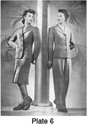

Early 1940's—Ladies' Garment Cutting and Making
by
F. R. Morris
Chapter XXIV—Pattern Construction for the Wholesale Trade
UNDOUBTEDLY the future of the garment trade as a career for men and women lies in the wholesale side of the business. For here the opportunities are as many and varied as the different branches of the trade allow. In comparison with the retail trade, scope for advancement is relatively more commensurate with individual ability, providing opportunities for graduation from a stock cutter's position to either foreman or forelady over a cutting-room and eventually to designer or designer-cutter's office. Here one has undisputed sway over the entire production of the establishment, ranging from the actual designing to pattern-cutting and production of first samples and repeat orders in bulk.
Whilst the work is less individual in comparison with the retail measure trade with its personal contacts in the fitting room, this lack of personal contact has its compensations, for the worker, being tree from the average customer's fads and foibles, can concentrate more successfully on the production of as perfect a garment as possible to a desired standard of fitting quality. It is the aim and the test of the wholesale designer to produce garments that will give a fair to good fit on the greatest number of persons of a similar bust size. On whether he can achieve this result or not depends the success or otherwise of the establishment with which he is associated, and also his own success. That there must be a certain amount of alteration when the garments are tried on individual customers in the shops is admitted, but, on the other hand, the balance of the garments must be such that these alterations remain minor in character; for example, shortening the sleeves, shortening the length of the coat or similar garment to the customer's own ideas, or moving buttons.
The author has had the personal experience of trying on stock garments made by reputable wholesalers on average figures and finding them to be completely out of balance—too long in the front balance from neck to bust, resulting in the garment falling away from the figure at the front, or too deep in the armhole, necessitating a major alteration by lifting the shoulders and bringing the garment up into its correct position on the wearer. This particular alteration is far from simple, for as the shoulders are lifted the armhole becomes smaller in circumference, the collar too long, and the sleeve head too large to go back into the smaller armhole. So it cannot be emphasized too strongly that the fit and balance of garments in the wholesale trade must be as perfect as is humanly possible before they are passed and repeated in bulk orders.
The chief fault lies with the wholesale pattern cutter having failed to test out his pattern on a number of different figures before going into production. Too often it is the case that designers work on a stand or dummy figure, a practice which, while being an excellent idea in its way and very adaptable to the cutting of special effects or trying out of different seam placements that cannot accurately be visualized on a flat draft, cannot bear any comparative resemblance to an. actual human figure.
The wholesale cutter must test out his patterns on. living models, as many of the same or similar bust size as possible, and then cut coats for each figure,, using the same basic pattern in each instance. He must fit these garments and then note in a tabulated form the various alterations from the basic pattern necessary to find the average outline for each and every figure. These alterations should be transferred to the basic pattern and then an average taken which will give the pattern outline most suitable to fit the greatest number of varying figures of equal bust measurement.
Every firm has its own ideas of style, which should be set by the designer to form almost a trade mark so that buyers will be able to recognize that each wholesale house can be relied upon to provide their style requirements. In other words, wholesale houses should specialize and create an individual style, so that a model has only to wear a sample for the buyer to recognize the house of origin.
The basic outlines of fit, degree of ease, or closeness should vary only with changing seasonal fashion. It must be possible for a designer to produce garments to many different styles which are identical in fit and balance. It has been the author's own experience to cut many samples from the same pattern and yet find, on having them made up, that the fit in each instance was completely different. This may be due to a number of causes, namely, different texture of material, the human element in making-up, or errors in cutting out. But it only serves to point the fact that designers must be constantly on the alert whilst making samples in order to study the requirements of each design.
There is very little time or money in the wholesale trade for altering or adjusting patterns, for samples have to be cut, made up, and passed by the principals as quickly as possible so as to enable travellers' samples to be put in hand, costings made up, pattern ranges got out, publicity arranged and all the myriad details of making a collection attended to. Therefore it is wasting time, cloth and money to use a pattern of which one is not sure of the result. Far better to test out thoroughly beforehand in any old piece of muslin, canvas or odd cloth to ensure the reliability or otherwise of the base pattern.
It is the purpose of this work to present tested patterns on a systematic basis so that cutters will be able to produce a corresponding result not only in their sample sizes, but throughout an entire size range. The degree of fit is close as befits modern style in garment cutting, but adjustments for degrees of ease or closeness will be illustrated by practical examples.
The basis of the system is contrary to the accepted practice of the majority of designer-cutters. As a general rule cutters in drafting out their patterns use the bust measurement as a basis of construction, but the author's system is based on the chest measurement, taken on the level above the bust. The logical explanation of this is simple, for the chest measurement is a true measurement of the frame of the body, whilst the bust measurement is a measure of what is technically a disproportionate growth on the body. By this is meant that the bust measurement may vary in relation to the chest measurement when the latter remains constant. For example, a chest measure of 34 inches may have a corresponding bust measurement of anything from 35 to 38 inches, depending entirely on the development of the bust. Therefore to calculate important measurements affecting the balance and fit of a garment from such an inconstant factor in relationship to the actual frame of the body as the bust measurement is to court disaster. To base the balance of a coat, position of the armhole, depth of armhole, width across front shoulders, etc., on a measurement that may be taken on the figure in a position totally out of relationship to any of the above factors is to render pattern construction completely unscientific.
To facilitate complete understanding of the system of cutting the master pattern, the constructional stages will be described in some detail with the logical reasons given for each point as we go along. Once the master pattern is constructed in perfect balance, all other variations of style and seam placement are more of the nature of pattern manipulation and as such can be mastered by anyone with a knowledge of pattern construction.
A first essential of pattern construction is accurate measurements. Upon these depends the success or otherwise of a cutting system, but whereas they are of paramount importance in the retail trade as garments are cut to individual measurements, in the wholesale trade we work to an imaginary perfect figure, the measurements of which are decided by the average measurements of a number of figures of similar bust size. Obviously there must be some standard of measurements which conforms to the average proportions of women of an equal bust size, but this standard must be varied to suit the trade and district in which the garments are sold. In the West End of London, for example, it is possible with success to make saleable garments with a proportionate increase of 2 inches between the bust and hip measurements, whereas this standard of proportion would be entirely inadequate for the North of England.
For the purpose of the cutting system in this book, it is proposed to base the draft on the proportion of 3 inches difference between the bust and hip measurements. This is a proportion that works out very well in practice and provides a balanced garment suitable for the majority of customers desiring a well-fitting stock garment to fit the average woman. It must be realized that a stock garment must have the qualities of being fairly long in the back balance to lie well into the waist, easy over the bust to allow for easy buttoning and to fit a size larger in bust than marked size, easy in the armhole to fit over a jumper if necessary, and short in the front balance for a snug fit at the lapel and back of collar.
To decide the shoulder balance of the pattern in respect of the front and back depth of armhole, take a check measurement from the nape of the neck at the back round under the armpit close up to the figure and up from the front of the armhole across the shoulder to the starting point at the back of the neck. The increase or decrease of this measurement automatically indicates whether the figure has a long or short neck or square and sloping shoulders.
This measurement the author has found very reliable in practice and one that gives every satisfaction in measure cutting, and for this reason it has been embodied in the system for drafting the base pattern.
The other measurements necessary are the net waist measurement, the hip measurement, and across back width. The height of an average figure is also necessary, for from this measurement we obtain our depth of armhole and natural waist lengths on the principle of the eight-heads theory. This latter theory of figure measurement is sadly neglected by the cutting fraternity as a whole, but it needs only a little logic to understand that any increase in height must be proportionately divided throughout the figure. The measurements upon which the base draft is systematized are as follows—
- Height = 5 feet 4 inches.
- Natural waist length = 16 inches.
- Chest above bust prominence = 32 inches.
- Bust = 34 inches.
- Waist = 26 inches.
- Hips = 37 inches.
- Round arm measurement = 24 inches.
It should be pointed out that the pattern outline obtained from the working out of the system is essentially modern in character, with a wide shoulder effect, close fitting waist and close over the hips, and for designers whose trade lies on easier fitting garments the system will also provide for the necessary adjustment by simple deviations from the base outline.
The system provides for seams round the armhole and gorge, and also down the sideseams. It will be found in practice that this method of cutting base patterns is most practical in general use as these seams are constant in their allowances and need not be altered for different styles. All other seams must be added where design lines are placed when cutting out the patterns, 3/8-inch seams are allowed, this being the usual quantity absorbed in the wholesale trade.
The draft also carries the requisite allowances for ease throughout bust, waist, and hip measurements.
To proceed, commence drafting out the outline points as illustrated by Fig. 346.
 Outline of Constructional Points for
Jacket Patterns (Fig. 346)
Outline of Constructional Points for
Jacket Patterns (Fig. 346)

Commence from point X. This point represents the nape of the neck at the centre back. Draw a straight line downwards the full length of pattern required, approximately 24 inches.
- 1 from X for the depth of armhole is 7¾ inches.
- This quantity can be calculated in two ways, each of which checks the other. The height of the normal figure is 62 inches, and calculating on the basis of the eight-heads theory, one-eighth of this height gives us a depth of armhole measurement of 7¾ inches. As a check to this method, the application of the round armhole measurement will be explained later in the system.
- 2 from X is the natural waist length.
- This measurement can be taken either direct on the figure or calculated as one-quarter of the height = 15½ inches, to which must be added the 3/8-inch seam allowed round the back neck.
- X to X = the fashion length.
- Square out from points X, 1, 2 and 3.
- 4 from 1 = the half chest measurement, applied net.
- 5 from 4 = 2½ inches, the standard allowance for ease, and two 3/8-inch seams.
- 6 from 1 = the half bust measurement plus 2¾ inches for ease and seams.
- 7 from 1 = half from 1 to 5 for the position of the scye.
This division of the chest measurement illustrates the principle of obtaining the basic constructional points from the chest measure in contrast to the usual procedure of calculating from the bust measurement.
The position of the armhole or scye is of paramount importance in the construction of a well-balanced pattern, and the method advocated here has given excellent results. Logically, as the armhole is situated on the chest line, and not on the bust line, it must follow that the position must be decided by a division of the chest measurement placed in the correct location in comparison with the front and back across widths.
The actual width of the scye is based on practical experience rather than on proportions of either the chest or bust measurements. It is governed in part by the back width, but for the purpose of wholesale pattern construction an average width suitable for average figures is the most effective method.
A 34-inch bust figure is found in practice to carry 4½ inches width of scye, and from this standard there should be an increase of ¼ inch for every 2 inches increase in the chest measurement. Chest measurement is taken because, if the bust measurement is out of proportion, this has no bearing on the width of the scye, which remains constant with the chest measurement.
- Divide the width of scye equally each side of point 7 to 8 and 9.
- Therefore 8 from 7 = 2¼ inches and 9 from 7 = 2¼ inches.
We now have to consider the question of a cutting scale from which various sections of the pattern draft are derived.
The cutting scale gives a basis of comparison and proportion by which the draft is balanced equally in all its sections.
The author's cutting scale is based on a division of the chest measurement, for the reason that stable parts of the body such as the width of neck at back and front, slope of shoulders, etc., remain constant with the chest measurement whatever the degree of development of the bust measurement.
The method of finding the scale is to take one-half of the chest measurement. This quantity applies up to and including 36 inches chest. Over 36 inches chest measurement the scale is found by taking one-third of the chest measurement plus 6 inches.
To continue with the draft.
- 10 from X for the half back neck width = one-sixth of scale net.
- Square up from 10 to 11 for the shape of the back neck, ¾ inch.
- 12 from X for the back shoulder slope = 1 inch.
- Square up from 9 to intersect the line squared out from 12 at point 13.
- 14 from 13 for the width of the back shoulder = 1 inch.
- Square up from 8 to 15 for the shape of the scye = 1¼ inches.
- Measure the width of the back neck from X to 11 and then apply half the round shoulder measure from 8 to strike an arc at 16. Apply the same measurement from point 6 plus the difference between half bust and half chest measurements to intersect the arc at 16, thereby locating the neck point.
- Join 16 by a line to a point 1½ inches above point 1 on the centre back construction line.
- 17 from 16 for the front shoulder width = the back shoulder width from 11 to 14 less ½ inch.
- Join 15 to 17 and shape the front scye ½ inch inside the construction line.
- 18 from 6 = the half round shoulder measurement applied from 6 less the width of back neck.
- Square out from 18 to 19 equal to the width from X to 10.
- Square down the centre front line from 6 to 20 and 21 on the intersections of the lines squared out from 2 and 3.
- 22 is squared out from 7, and 23 is a continuation of the line from 7 and 22.
- 24 and 25 are each ½ inch from point 22 for the side waist suppression.
- 26 from 21 = the half waist measurement plus 1 inch to 1½ inches for ease, depending upon style.
- 27 from 26 = the waist suppression from 24 to 25 plus 3/8 inch for seams.
- 28 is halfway between points 27 to 20.
- 29 from 3 = the hip suppression.
- 30 from 21 = half 27 to 28.
- The hip overlap at 31 to 32 = half the difference between the bust and hip measurements = 1½ inches.
- Shape the front and back sideseams as shown.
- 33 from 1 = 2 inches.
- 34 from 6 = 3 inches.
- Join 33 to 34 for the actual breast position.
- Join 20 to 17 to locate the bust point at 35 on the intersection of the line joining 33 to 34.
- Square down from 35 to the hem line.
- Suppress at the front panel seams the quantity shown from 27 to 28 less ¾ inch.
- Suppress at the hip line on the front panel seams the quantity shown from 30 to 21.
- Shape out the front panel seams as illustrated from the hem line up to 35.
- 36 from 16 = 2 inches. Join point 19 to 36. 37 from 19 = 2 inches. Shape out the bust dart from 36 and 37 down to 35 as shown.
- 38 from 14 = 17 to 36.
- 39 from 2 = 4 inches.
- 40 from 3 = 4 inches.
- Suppress at 39 the quantity shown from 28 to 20.
- Suppress at 40 the quantity shown from 3 to 29.
- Suppress ½ inch at 38 and complete the shape of the back panel seams from 40 to the waist and up to the shoulder at 38.
- 41 from 18 = one-sixth of scale plus ¼ inch.
- 42 from 6 = 1½ inches for the front edge beyond the centre line, for the single-breasted button fronts.
- 43 from the bottom edge line = ½ inch. Shape the bottom edge run from 43 to the sideseam.
- Complete the shape of the lapel as illustrated.
- The front pitch is located diagonally at A from point 8 and the back pitch B is half X to 1 up from point 9 on the chest line.
The draft now completed provides for an easy-fitting jacket over the bust line, with a slight drape at the front of scye, slightly draped back scye, and a square wide shoulder appearance. Made up pads are allowed for in the shoulders and must be inserted to get the best results from the system.
The waist and hip fitting are snug to the figure and the front bust dart and panel seam treatment accentuates the figure in the modern manner. It will be seen that there are a number of alterations from the standard basis draft given in Chapter III of this work, but this is understandable when it is realized that a wholesale jacket must fit a variety of figures and should be of such easy fitting proportions through the shoulders to fit any variations of these measurements in an increased quantity. The average wholesale jacket will fit a 35-inch bust figure quite well when the size ticket indicates a 34-inch bust, and it is to meet these contingencies that variations have taken place in the wholesale system in comparison to the bespoke diagrams.
Sidebody Jacket Draft (Fig. 347)
The foregoing has described the basis system for panel front and back jacket styles, and this draft will describe the drafting alterations necessary for the production of a sidebody jacket.
This style of jacket is perhaps more popular to-day than the panelled jacket, as there is a tendency for ladies' jackets to become simpler in style and more approximating to the style of a man's lounge coat.
The draft retains the panel front for perfection of bust and waist fitting, and the back is drafted from a whole back block pattern extending to the underarm sideseam.
The outline points are the same as for the panel draft, and to make the alteration into a sidebody lounge back style proceed as follows—
- C from 2 = ¾ inch in all instances.
- D from 3 = the back hip suppression ½ inch in all standard measurements.
- E is located at 2 inches up from the bust line on the back scye for the top of the sidebody.
- F from C = half of the bust scale as a general guide for the width of the back at the waist.
While this measurement is given, it must be understood that this is only a general guide for style, and it is up to the designer to make the shape of the waist in accordance with a definite style trend of his own, that is, what he considers is good style, and, having decided the position, to retain it in order to standardize the production style throughout the various ranges of designs.
- G from D = ¾ inch wider than the distance from C to F.
- Shape the sidebody back seam from E to F and G and down to the hem line as illustrated.
- H from F = the remainder of the back waist suppression indicated from 27 to 28 less the quantity from 2 to C.
- Shape down the sidebody seam from E to H and G down to the hem line to complete the draft of the sidebody.
- Add 1½ inches beyond the centre line for the front edge and complete the shape of the single-breasted lapel.
Block Front Jacket Style (Fig. 348)
The other standard basic draft for ladies' jackets is the block front style, without front panel seam and relying on waist darts for the waist suppression.
Fig. 348 also illustrates a variation of the back. This consists of a centre back seam with two panel seams over the blades.
The back part is as follows—
- The outline points of the block pattern are the same as Fig. 346, the basis draft, and to make the variation for the centre back seam mark in from 2 to C ¾ inch in all instances.
- D from 3 = the hip suppression quantity of ½ inch.
- Shape the centre back seam from D through C up to the centre back neck point at X, suppressing ¼ inch at the breast construction line.
- E from 11 for the position of the panel seam at the shoulder = 2½ inches or ½ inch more than the position of the corresponding seam on the front shoulder.
- F from C at the waist line for the position of the panel seam = from 2½ to 3 inches according to style and the personal views of the designer.
- G from D for the position of the panel seam at the hip level = from 3¼ to 3½ inches.
- Shape the side panel seam from E to F and G and down to the hem line.
- H from F = the remainder of the back waist suppression as decided from the basis draft.
- Shape the remaining panel seam from G through H and up to the shoulder seam at E, suppressing ½ inch at E for the shape over the blades.
This completes the draft of the back part, and we will now proceed with the necessary manipulation of the block front pattern to eliminate the panel seam.
Cut through the pattern on the front panel seams from the hem line up to the bust point at 35, and then by pivoting from 35 place the two edges of the panel seams together at the hem line as illustrated by the diagram and indicated by the dash lines.
This pattern manipulation will have the effect of opening up the bust dart from 35 to 36 and 37, and this increase will have the further effect of increasing the bust shape that has been previously reduced by the closing out of the front panel suppression.
Mark in the first waist dart in the position indicated on the diagram and reduce at K the amount of waist suppression shown between the dash lines at the waist.
The standard waist dart suppression of ¾ inch is taken out of the pattern at J.
Add 1½ inches at the front edge to complete the draft.
Draft of a Sports Jacket (Fig. 349)
Fig. 349 illustrates the draft of a popular style of ladies' sports jacket and illustrates a more complicated method of pattern manipulation.
This style has a yoke across the back and front shoulders with the back gathered into the yoke to give fullness and ease of movement. The bodice is also gathered into the front shoulder in a like manner to balance up the style points.
A half-belt is shown across the back waist, and the back skirt part of the jacket below the waist is cut without any seams or panels.
Two waist darts are indicated on each side of the foreparts, and four patch pockets complete the style points. The fronts button high up to the neck line, finished with a small single-breasted lapel.
The back pattern manipulation is shown by Fig. 349, and to obtain the required pattern a solid block pattern of the back is utilized.
Points X, 11, 14, 7, 24, 32, 3, 2 and 11 are the same as described by Fig. 346.
To construct the amended pattern, first fix the position of the shoulder yoke seam down from the shoulders. For the purpose of this draft, the shoulder yoke is placed at half the distance from X to 1 and located at A.
Square across from A to B as shown by the dash-line.
The back waist suppression quantity of 1¾ inches is marked out on the waist seam at points C and D, being spaced at approximately 3 and 6 inches from the centre back construction line at 2.
The back hip suppression quantity of ½ inch is marked out at E, and the other pivoting point F is located at approximately 3 inches from E.
These measurements are given approximately, as they would naturally vary with different size waist and hip measurements.
The shoulder yoke cut separately from the back is shown by Fig. 349 (b).
Take the pattern and split through from C to G and from D to H as shown by the dash lines. Close the dash lines together at C and D and then open out the dash lines at G and H by pivoting from C and D. The amount these dash lines are opened decides the amount of fullness to be gathered into the shoulder yoke. In this instance, each dash line has been opened out by 1½ inches in each point, giving a total quantity of fullness equal to 3 inches on the half back and 6 inches across the whole back shoulder. This quantity is ample for fullness, and any excess only tends to affect the fit of the jacket under the scye towards the front by a lack of control.
The skirt of the back is manipulated into shape by closing out the ½ inch of back hip suppression at E and then, by opening up the dash lines from E to C and F to D, obtaining the solid pattern outline as indicated by the points from 2 to C, D, 24 and 32.
The back patterns are completed by adding seams from A to B on the shoulder yoke seam, from A, G, H and B on the lower shoulder yoke seam, and from 2 to C, D and 24 on the across waist seam.
Add a seam across the back skirt waist seam from 2 to C, D and 24 to complete the construction of the back patterns.
Forepart Pattern Manipulation (Fig. 350)
Fig. 350 illustrates the pattern manipulation necessary to obtain the shoulder yoke and front bodice fullness.
First close out the front panel seams from the hem line to the bust point at 35 to obtain a seamless front pattern, and then proceed to fix the position of the front shoulder yoke down from the shoulder.
While the position of the shoulder yoke is a matter of personal taste, the following measurements give a good idea of general style.
- A from 17 is 4½ inches down on the front of the scye for the termination of the shoulder yoke in the scye.
- B is 4 inches down from the gorge run at the neck on the centre line of the position of the shoulder yoke at the centre front.
- Square across from B at the centre line to locate point C midway the two bust dart seams.
- Square across from C to locate points D and E on the shoulder darts seams, making E from 36 = to 37 to D.
- Join B to D and E to A for the run of the shoulder yoke seam.
The appearance of the broken seam run from B to D and from E to A is necessary, so that when the shoulder dart is closed together this seam will make one unbroken seam line.
If the seam had been marked across the shoulder in a continuous line, when the shoulder dart had been closed together, a point would have appeared at points E and D instead of the unbroken seam that is required. So the procedure is to square out to the centre of the shoulder dart and then make the joining points on each seam of the shoulder dart equal in length down from the shoulder seam.
The shoulder yoke is now 1½ inches smaller than the corresponding seam of the forepart from A to E, D and B, and as this quantity is insufficient to give fullness over the bust with regard to the fact that the style of the jacket requires an extra quantity of width under the yoke, it is necessary to manipulate the forepart pattern in the following manner to increase the fullness.
Cut through the dash lines from E and D to 35 and from 35 down to the hem line. By pivoting from the hem line at G, wedge open the pattern at 35 approximately ½ inch to obtain the reconstructed pattern points from E to E1, A to A1 and 7 to 71. The pattern will also open at 25, but as the fullness is not required below the bust, point 25 is retained in its original position and the sideseam is re-shaped back from 71 to 25 as shown by the diagram. We now have a quantity of 2 to 2½ inches of fullness in the shoulder yoke seam of the foreparts, and this quantity is sufficient for normal style purposes.
The quantity of front waist suppression shown between the front panel dash lines is taken out in the form of dart at point F, and the suppression of the waist is completed by the standard waist dart of ¾ inch at H.
This completes the pattern manipulation of the foreparts to obtain the shoulder yoke and bust fullness, and the draft is completed by adding 1½ inches for the front edge beyond the centre line and shaping out the single-breasted lapel as indicated by the diagram.
Construction of the Canvas Pattern (Fig. 351)
The construction of canvas patterns is of paramount importance in the wholesale trade as the shape of the coat depends entirely on the interlining retaining its shape in wear. The making-up of a jacket in wholesale production naturally has not the skilled handwork of a man-tailored garment with its manipulation, pressing into shape, and general detailed work. Very often the work is made in its entirety by tailoresses, and when the jacket is finished it may be pressed-off on a flat Hoffman steam press and, consequently, stands a good chance of losing whatever shape the makers-up have succeeded in working into it.
Therefore it is very essential that the framework of canvas should be cut in a shape to agree with the designed outline of the jacket, and made in such a way that it retains its shape.
While a ladies' jacket canvas has not the reinforced shoulder haircloth padding of the similar man's jacket canvas as a general rule, it is sometimes advisable to make the canvas on the lines of a man's canvas if a permanent shape is desired. The majority of ladies' tailors use flax canvas for jackets to obtain a soft front effect, but the tendency to-day is to use a more substantial interlining, and various types of syddo are now in use. In the National Press and trade papers many retail shops are advertising their tailor-mades and coats as having unbreakable fronts, stressing the fact that their garments retain their shape in wear, and this is a revolutionary step in the right direction towards raising the standard of factory-made garments in the public mind. Too often the main objection to factory-made garments has not been over the question of style, but over the question of make and whether the garment will keep its first shape in the course of wear.
Generally speaking, so far as style is concerned, the productions of a good wholesale firm specializing in tailor-mades and coats are equal to the best measure garments after minor adjustments are made. Too often, measure garments are so fitted and recut about that their original shape and balance are completely distorted and the result may be a fit so far as fit is required, but something that lacks style.
The wholesale garment, on the other hand, is designed and cut to an ideal, that of the perfectly balanced garment, with concentration on style as well, and so with minor adjustments it will retain its predesigned style and character. That is not to say that the top-class cutter in a retail house cannot improve on the wholesale. He can, admittedly, but every tailoring house in the retail ladies' trade has not the services of a highly-skilled cutter, and it is these smaller businesses that are in the greatest danger from wholesale competition. For a wholesale designer has only to concentrate on increasing the high standard of his productions in the realm of fit and style, and it follows that, by virtue of being a highly-paid specialist, his productions have all the advantages over those of his less skilled prototype in the retail trade.
On the other hand, the wholesale trade cannot and does not wish to cope with the difficult figures of this world, and that is where the retail trade will always have its outlet. For these disproportionate figures need a good deal of fitting to approach anything like a satisfactory fit, and if they obtain that satisfaction then they are less concerned as to whether the garment carries the latest ideas in shoulder width or waist shape.
But to continue with the subject of canvas cutting for the wholesale trade. There are many methods of cutting the canvases. Some are good, but others leave a lot to be desired, as it often happens that designers underestimate the value and necessity of a good foundation for the shape of their garments and leave the cutting of the canvases to the tailor or tailoresses making the garment. But the question cannot be ignored, otherwise the production will suffer, with consequent fall in the demand for the wholesale firms' orders.
First it must be realized that the canvas must conform to the shape of the outer cloth in all respects of suppression and shape. Too often canvases are put into coats that bear no relation to the outside of the garment, and the consequence is that in the course of pressing-off the garment, both canvas and cloth suffer distortion, resulting in loss of shape and a garment lacking the essentials for retaining the predesigned style points.
Fig. 351 (A) illustrates the first method of cutting the canvas. Take the forepart pattern and mark round the shape of the front edge, shoulders, and front of scye. The front half of the canvas has an identical run with the front panel seam from shoulder seam to hem line as illustrated. The second part of the canvas, i.e. the shoulder part, is cut identically with the shape of the panel seam from waist level to bust point, and shaped up from the waist in a straight line to the front pitch.
From the bust point it follows the run of the panel seam to within 4 inches of the shoulder seam, and then ½ inch of spring towards the front of the jacket is added as diagram. This shaped seam when sewn to the front panel seam produces a certain amount of ease at the front of the scye to compensate for the necessary ease over the shoulder point.
Add ½ inch of extra width to the canvas round the front of the scye, across the shoulder seam, round the gorge and step of the lapel, and, to complete, down the front of the lapel to the position of the first button. From the first button to the hem line the canvas is cut to the shape of the front edge.
A seam must be added to the shoulder part of the canvas from A to B and C, and when the canvas is made the two edges should be overlapped one seam and machined up together overlapped, and not sewn out in an ordinary seam.
Fig. 351 (B) shows the same canvas cut without the suppression from waist to bust point. In this canvas the bust dart terminates at the bust point, and the waist suppression from A to B is substituted by a diagonal dart from D to the bust point and is obtained by closing out the waist dart at A to B.
Fig. 351 (C) shows the usual reinforcement pattern. This is obtained by closing together the two sides of the bust dart and then shaping the edge of the reinforcement pattern to run ½ inch behind the crease line for approximately 6 inches, and then shaped down to the bust point and back to the front pitch point as shown by the diagram. A cut through the shoulder is made at E to F, 3 inches in length, and when the reinforcement is laid over the canvas this dart opens to fit the ½ inch of spring infused into the canvas at C.
The Sleeve System (Fig. 352)
The points set out in Chapter V apply equally to the cutting of sleeves in the wholesale trade, but in addition it is necessary to be able to produce a sleeve that has a clean-hanging appearance at the back when on a model or display stand. The secret of this clean-hanging sleeve, which, in addition, possesses the required amount of freedom of movement, is what is termed "drape" in the tailoring trade, that is, a sleeve that has a reserve of material at back and front, which when the arm is moved comes into play, and yet when the arm is at the side lies cleanly in a soft fold at back and front of the scye.
A high crown to the sleeve head also makes for a clean-hanging sleeve, and the method of sewing the sleeve into the scye also plays its part in the final result. At the front of the scye, the sleeve must be well fulled in so that the fullness has the effect of allowing the sleeve to fold forward over the arm muscle, and at the back scye the undersleeve should be fulled in by at least ¾ inch to allow the hindarm of the sleeve to fold back over the scye. These folds at back and front come into play when the arm is moved and then lie close to the coat when the arm is at rest.
Fig. 352 illustrates the draft of the sleeve in conjunction with a normal scye draft.
- Point A is the front pitch, marked on the scye diagonally from the front of scye point.
- B is the standard position of the back sleeve pitch, located at half the back depth of scye up from the chest line.
- C is the fashion sleeve pitch at the back scye, located at 1½ inches down from B.
- D is the shoulder point of the back shoulder.
- E is the front shoulder point.
- 15 is 1½ inches up from the base of the scye, located on the front of scye line.
- E on the front scye is one seam below point E.
Commence the sleeve draft by squaring across from F to G on the back scye line.
- H is one seam below the level of the back shoulder point at D.
- J for the crown height is located at midway G to H, and this point J represents the actual level of the shoulder of the jacket on the figure when the shoulder seams are sewn together.
- Square a line out from J for the crown height level.
- From point F and pivoting from 15 at the front of scye, sweep out to locate point K, 5/8 inch from F.
- Square down from K to L on the line squared out from the scye pitch B.
Now we come to the question of fullness in the sleeve. A draped sleeve effect can only be achieved by the addition of essential fullness in the sewing in of the sleeve, and the quantity for this draft is decided at 2 inches.
- So mark from L to M 2 inches for the fullness addition.
- Then measure from the back sleeve pitch B up to the shoulder point at D and apply this quantity direct and net from M to N.
- Square out from the fashion pitch at C to obtain the point MN, which is 1¼ to 1½ inches from a line squared directly down from N.
- Shape the run of the sleeve head from MN through N, midway through G and J, round to K and down to 15 at the front of scye, making the sleeve run between K and 15 approximately ¼ inch from the front of scye.
- Line through from K and 15 to locate point O, equal to the distance A is from 15.
- Add a 3/8-inch seam from O to P as indicated.
- Square down from P to Q, the forearm length plus one seam.
- Square out from Q to R 1 inch for the necessary forward hang of the sleeve.
- S is midway P to R for the position of the elbow.
- By the line from P to R, square out from S for the elbow line position.
- T from S = 1¼ inches for the shape of the forearm.
- Shape the forearm up from R to T and P.
- U from T = the distance P is from the forearm seam at A, after a seam has been added forward from A as shown.
- V from R, squared out from R = from U to T.
- By pivoting from point N, sweep back an arc from midway V to R to locate point W at the hindarm.
- W from midway R to V = the cuff width plus two seams.
- X from the line joining W to N = 1¾ inches for the sleeve width at the elbow.
- Y is ½ inch from X.
- Z is 1 inch from the back pitch at C. Shape forward one seam and complete the shape of the under-sleeve as shown in the draft.
- Shape down the hindarm seams from MN to X and W and from Z to Y and W.
The width of the sleeve below the scye should measure in respect of a 34-inch bust size 14 inches. This measurement is given as a guide to obtaining a sleeve that will give the necessary freedom over the muscle in wear and should vary only if the width of the sleeve is of more importance than the amount of freedom required.
Fig. 353 shows two sleeve cuff finishes that are self-explanatory and illustrates (A) an open cuff and (B) a sham open cuff.
Block Patterns for the Wholesale Trade (Fig. 354)
Every wholesale designer works from a set of reliable and well-tested block patterns, as it would be obviously non-practical to draft by system for every new design in addition to the risk of failing to repeat a successful pattern.
The most useful patterns to have are as follows—
1. A solid block outline of the back and forepart, joined together at the sideseams as shown by Fig. 354 (a).
2. Back and forepart cut separately as Fig. 354 (b).
3. Outline patterns of the panel back style as Fig. 354 (c).
4. Outline patterns of the back and sidebody style as Fig. 354 (d).
5. Outline patterns of the panel front as Fig. 354 (e).
6. Outline pattern of the block front style as Fig. 354 (f).
All balance marks should be inserted on the patterns, and also pitch points and breast waist and hip level lines.
With this complete set of block patterns it is possible to produce any style of jacket patterns and to retain the essential fitting and style points as decided by trial and error.
A full range of sizes should be cut in all of the patterns and graded so that all seam positions give identical lines to the original master pattern.
Skirt Basis Draft (Fig. 355)
Fig. 355 illustrates the skirt basis draft. This draft is very simplified in outline and will serve as an efficient block pattern for the designing and cutting of all styles of skirts.
Measurements for the draft are as follows—
- Waist = 26 inches.
- Hips = 37 inches.
- Full length = 27 inches, or to present fashion.
Commence from point X.
- 1 from X = 8 inches down for the hip level.
- Square out from 1 to 2, one-fourth of the hip measurement plus ¼ inch.
- Square up from 2 to 3 equal to X to 1.
- 4 from X = one-fourth of the waist measurement plus ¾ inch for the front waist dart.
- Square down from 2 to 5, making the length from 4 to 2 and 5 equal to the side skirt length plus one seam for the turning-in of the waist.
- 6 from 5 = 1½ inches. Shape the sideseam from 4 through 2 down to 6.
- 7 from X = ½ inch.
- 8 from 7 = the full length of the skirt.
- Shape the hem from 8 to 6 through 5.
This completes the draft of the front of the skirt block pattern.
THE BACK SKIRT DRAFT
Commence from point 12 at the centre back waist.
- 13 from 12 = 8 inches down for the hip level.
- 4 from 13 = one-fourth of the hip measurement plus ¼ inch.
- The hip measurement has now in effect had 1 inch added for ease.
- 15 from 12 = one-fourth of the waist measurement plus 1½ inches added for the standard back waist dart quantity.
- 16 from 12 = ½ inch. Shape the waist seam from 16 to 15.
- 17 from 12 = 4 inches for the position of the back waist dart centre.
- 18 from 17 = ¾ inch.
- 19 from 17 = ¾ inch.
- Shape out the back waist dart from 18 and 19 down to 20, making the dart 6 inches in length.
- 21 is squared down from 14 and is equal to the sideseam length plus a seam from 15 measured through 14.
- 22 from 21 = 1½ inches. Shape the sideseam from 21 up to 14 and 15 as shown.
- 23 from 16 = the full skirt length.
- Shape the hem line from 23 through 21 to 22.
This completes the draft of the skirt block pattern, and when cutting from the material an inlay should be added down each sideseam and 2 or 3 inches hem as required.
Manipulation of the Skirt Block Manipulation of the Skirt Block Pattern (Fig. 356)
Fig. 356 shows the use of the skirt block pattern in practice, and for the purpose of the diagram a skirt with an inverted pleat at centre front, two knife pleats at the side front, and an inverted pleat at centre back is taken.
The skirt also has a slight flare at the sideseams, and represents a very fashionable and useful "odd" skirt style.
The method of adding the side knife pleats and the centre back inverted pleat is in keeping with modern practice, which aims at eliminating excess material inside the skirt.
Take the front skirt block pattern and cut through from the hem up to the end of the front waist dart at 11, and then by pivoting from 11, close points 9 to 10 to open the width of the skirt at the hem.
- A from point 8 = 14 inches up from the hem for the length of the centre front inverted pleat.
- B from A = the width of the front pleat 3½ to 4 inches.
- C from 8 = the width of the pleat as above.
- Join points C and B for the fold edge of the pleat.
- D is half A to B, and then mark up from D to E.
- F for the position of the side knife pleat = 2½ inches from 7.
- G from 8 = 3½ inches.
- Join G to F for the centre of the knife pleat.
- H from G = 2 inches.
- J from G = 2 inches.
- Mark up the edges of the knife pleats from J and H to K and L.
- K and L, are 14 inches from the hem line and each point ½ inch from the centre line of the pleat. N and M are equal to K and L from point F.
THE BACK SKIRT DRAFT
Take the back skirt block pattern and split through from the hem up to the back waist dart at 20 and then close out the dart from 18 to 19, half the total width of the dart, making the dart ¾ inch in width.
- Add ½ inch from 16 to O and ½ inch from O to P for the top width of the tapered inverted pleat.
- Q from 23 = 2 inches.
- R from Q = 2 inches for the width of the inverted pleat at the hem.
- Mark up the crease lines of the pleat from Q to O and from R to P, and then add ½ inch seam from P to S and from R to T.
- Add 1 inch inlay down the sideseam from 15 to 22 as shown, with a small step at each end so that the machinist has no difficulty in sewing out the right quantity.
- Add similar V steps to the dart and pleat as indicated.
This type of tapered pleat is usually edge-stitched down its entire length on the outer and inner edges so that it remains in crease in wear.
All-round Knife-pleated Skirt (Fig. 357)
Fig. 357 illustrates the cutting of an all-round knife-pleated skirt, with tapered knife pleats from the waist to the hem. All the pleats are edge-stitched and will remain in place in wear. This type of skirt has had a great success, and justly so, as it combines a very clean fit over the hips without the added bulk of material inside which most all-round pleated skirts have.
Extreme care must be taken with the making-up of this skirt as there is a tendency for the material to stretch under the machine where it is unavoidably cut on the bias.
When cutting from the material, contrary to the usual practice, the sideseam is placed on the straight of the material so that the centre of the skirt comes on the bias. This method of cutting ensures the pleats over the sideseams hanging cleanly over the hips.
Commence by taking a front skirt block pattern and close out the front waist dart as described in Fig. 356 to eliminate the waist dart and to widen the hem width.
Points 4, 6, 7 and 8 are identical with previous drafts. Take the distance from 4 to 7 and divide into four equal parts, which, in the example of a 26-inch waist, makes each fourth part equal to 1 5/8 inches.
This division of the pattern provides for three pleats each side of the centre front pleat.
Take the distance from 6 to 8 and divide by four. In this example, each fourth equals 4 inches.
Join points A, B and C to points D, E and F at the hem line.
These lines are the pleating lines for the knife pleats.
Fig. 457 (b) shows the method of obtaining the knife pleats—
- Cut through the pattern from A to D and open out.
- AA from A = 1 inch.
- DD from D = 3½ inches.
- Mark the crease edges of the first pleat from A to D and from AA to DD and join D to DD and A to AA.
- Cut through the pattern from B to E and open out.
- BB from B = 1 inch.
- EE from E = 3½ inches.
- Mark the crease edges of the second pleat from B to E and from BB to EE.
- Join E to EE and B to BB.
- Cut through the pattern from C to F and open out.
- CC from C = 1 inch.
- FF from F = 3½ inches.
- Mark the crease edges of the knife pleats from C to F and from CC to FF.
- Join C to CC and F to FF.
- On the sideseam add 1 inch inlay at 4 and from 2 to 2A.
- G from 6 = 2¼ inches allowing for a seam.
- Join 2A to G for the sideseam knife pleat and complete by joining G to 6.
- At the centre front add 1 inch from 7 to H and 2¼ inches from 8 to
J
for the centre front pleat.
- This quantity allows for the necessary seam down the centre front, which as it is cut on the bias cannot be cut on the fold of the material.
This pattern is now completed and is suitable for both the back and front parts of the skirt.
The edges of all the pleats should be stitched both on the outer and inner edges right through to the hem line.
Grading for the Wholesale Trade
Grading of patterns plays an important part in the work of a wholesale designer and pattern cutter, for when he has made a successful sample and repeat orders are taken on it, it is necessary to cut a range of sizes incorporating the identical balance, style and fit of the original sample.
Now it is not always possible to undertake, and certainly the amount of time at any designer's disposal does not warrant, the elaborate process of cutting three or more sizes of patterns by system in order to obtain the intermediate pattern sizes as could be done in the retail trade when cutting out a set of block patterns. Hence a good knowledge of pattern construction and the amounts and increases in each section of the pattern is essential in order to eliminate the necessity for drafting more than one pattern to obtain other sizes exact in style and balance to the original.
Sometimes it is only necessary to cut two other sizes from the original—it all depends on how the garment sells and in what sizes. Usually in a general wholesale trade dealing with normal fashion as distinct from specialist houses that make for outsizes, a range of sizes from 32-inch bust to 40-inch bust is sufficient, but here again much depends on the type of trade catered for by the retail house to which the garments are sold. Some retail departments sell only from 34-inch to 38-inch bust, while others sell in American sizes (see size chart given in Chapter II). But whatever is the case it is a simple matter with a knowledge of pattern construction to be able to produce from one perfect pattern a range of sizes identical in balance and fit.
Our knowledge of measurements and system tells us that the back neck width increases approximately 1/8 inch per 2 inches of bust size, and that the back width increases approximately 3/8 inch for every 2-inch difference of the bust. Similarly, throughout the entire pattern the variations of size can be fixed and a set of graded patterns obtained without the process of drafting out each pattern singly by system.
Grade of a Jacket Back (Fig. 358)
Fig. 358 shows the grade of a jacket back from size 34-inch to 40-inch bust. Take the 34-inch bust pattern, and, commencing at the back neck point Q, mark up four ¼ inch points to represent the necessary increases in back depth for the four given sizes.
Then at point A on the back neck, mark forward 1/8 inch for every 2-inch difference of bust size, making four-eighths of an inch in all. Then square across from point A to intersect these four lines, and on the first line raise the back neck point A ¼ inch. On the second line raise ½ inch, and on the third line raise ¾ inch to represent the back neck point A for a 40-inch bust size jacket.
At the back shoulder, mark a line square down with the shoulder end point B, and then mark forward from this point three lines at intervals of 3/8 inch. Square out from point B to intersect these three lines, and then on the first line raise the shoulder point B ¼ inch. On the second line raise ½ inch, and on the third raise the back shoulder point ¾ inch to complete the grade of the back shoulder.
At the top of the sideseam at point C, mark out 3/8 inch for every 2 inches increase in the breast girth. At point D, mark out 3/8 inch for every 2 inches of increase in the waist girth. Lastly, at the hip level mark out 3/8 inch for every 2 inches of increase in the hip level.
Mark round the sidebody pattern, and then at the breast line add 1/8 inch for every 2 inches of the breast size. At the waist line, add 1/8 inch for every 2 inches of increase in the waist girth, and at the hip level add the same increase for every 2 inches difference in the hip measure.
The Grade of the Forepart (Fig. 359)
Take the forepart pattern, and then from the front neckpoint at A mark a line parallel with the breast line through A. Then mark three lines at ¼ inch intervals forward from A, and on the first line forward from A mark up 3/8 inch upwards. On the second line, mark upwards ¾ inch, and on the third line mark upwards 1 inch and 1/8 inch for the neckpoint of the 40-inch bust size. Connect up the four points from A by a grading line, and then from point B draw a line parallel to the line from A. Then mark up in sections equal to the points marked on the line up from A.
Square up from the breast line through C, and then mark up from C three points at 3/8-inch intervals.
Join point D to E, and then on the extension of this line from E mark up three grading points at ¼-inch intervals for the grade of the shoulders.
At the top of the sideseam add 1/8 inch for every 2 inches increase in the breast girth, and add corresponding quantities at the waist and hip levels.
At the centre front line on the breast line, add 3/8 inch for every 2 inches of the breast girth, and at the waist line and hip level add similar quantities.
At the gorge, square across from M and mark forward three lines at 3/8-inch intervals. Then on the first line mark a point ¼ inch up from the line squared out from M, on the second line add ½ inch up from the line from M, and finally on the third line mark up ¾ inch for the grading point of the 40-inch breast size.
At the bust point, mark forward 3/16 inch for every 2 inches increase in the breast size to complete the grade of the forepart.
The Sleeve Grade (Fig. 360)
The grade of the sleeve is as follows—
At point A on the sleeve head, mark forward three lines at ¼-inch intervals, and then on the first line forward from A mark upwards ¼ inch for the 36-inch bust size. On the second line, mark upwards ½ inch for the 38-inch bust size, and on the third line mark upwards ¾ inch for the grade of the 40-inch bust size.
At point B, mark a line through B and then mark three lines upward from B at ¼-inch intervals for the grade of the three sizes, 36, 38 and 40-inch bust. Then on the first line mark out 3/8 inch, on the second line mark out ¾ inch, and on the third line mark out 1 1/8 inches.
From point C draw a line parallel with the points graded out from B and then mark out three points similar to the points marked out from B.
At point D on the elbow, mark out three points at ½-inch intervals, and at the cuff mark out three points at ¼-inch intervals to complete the grade of the top sleeve.
On the undersleeve, draw a line from the top of the forearm through the top of the hindarm at F, and then mark out three points at ¼-inch intervals and complete by paralleling a line from F marked out in similar ¼-inch intervals.
At the hindarm, at point G, mark out three ¼-inch intervals, and at the cuff mark out three similar points at H.
Connect up all these grading points to complete the grade of the undersleeve.
A Child's Coat (Fig. 361)
The accompanying draft of a child's coat will satisfy the need for a practical system that can be adapted for the cutting of either boys' or girls' coats. The waist length of children varies a great deal through the various ages and a good size scale is essential for the producer of children's clothing. Other points are the provision for an easy scye for getting into the garment and a generally easy fit to allow for growing.
The draft illustrates the cutting of a panelled coat, buttoning up to the neck with a prussian collar and flared from below the waist down to the hem.
The measurements for the draft are as follows—
- Breast = 26 inches.
- Waist = 24 inches.
- Waist length = 11 inches.
- Full length = 26 inches.
- Half back = 5¾ inches.
- Working scale = half the breast measurement plus 1 inch.
To commence—
Square from point X.
- 1 from X = the depth of scye, half scale, 7 inches.
- 2 from X = the natural waist length plus one seam.
- 3 from X = the full length plus one seam.
- 4 from X = one-sixth of scale less ¼ inch.
- 5 from 4 = ¾ inch. Shape the back neck run from 5 to X.
- Square out from 1 to 6 for the breast line and make 6 from 1 equal to half the breast measurement plus 3 inches.
- 7 from 6 for the across chest width = half scale less ½ inch.
- 8 from 1 = half back width plus one seam.
- 9 is midway 7 to 8 for the position of the sideseam.
- 10 from X for the shoulder slope = 1 inch. Square out from 10 to intersect the line squared up from 8 and then mark the shoulder end point ½ inch out from the point of intersection.
- Shape the back shoulder seam from 11 to 5.
- 12 from 7 for the front neckpoint = one-sixth of scale plus 1 inch.
- 13 from 12 = from A to 1 plus one-twelfth of scale less ½ inch.
- 14 from 1 = 1½ inches. Join 13 to 14 and make the front shoulder width from 13 to 15 equal to the back shoulder width from 5 to 11 less ½ inch for easing-in the back shoulder to the front.
- Complete the shape of the scye as illustrated.
- Square down from 6 to 15 and 16 at the hem line.
- 17 from 15 = ¼ inch. Draw the centre front line from 6 through 17 to the hem line.
- Square up from 16 to 18, making 18 from 6 equal to 12 to 13.
- 19 from 18 = one-sixth of scale. Shape the neck run from 19 to 13 and then take out a ½-inch cut at 19 down the centre front line, making the cut 3 ½ inches in length.
- Square down from 9 to 20 and 21 at the sideseams and then shape out the sideseams, suppressing ¾ inch from 22 to 23 and overlapping 3 inches from 24 to 25.
- 26 from 2 = 3 inches.
- 27 from 5 = 2 inches.
- 28 from 3 = 5½ inches. Shape the back panel seam from 28 to 26 and 27.
- 29 from 28 = 4 inches.
- 30 from 26 = 1 inch. Shape the side back panel seam 27, 30 to 29.
- 31 from 13 = 2 inches.
- 32 from 17 = 3 inches.
- 33 from the centre line = 5½ inches.
- Shape the front panel seam from 33 to 32 and 31.
- 35 from 32 = ¾ inch.
- 34 from 33 = 4 inches. Shape the side front panel seam from 34, 35 to 31 as indicated.
- 36 from 19 = 3½ inches.
- 37 from 17 = 3 inches.
- 38 from 16 = 4 inches. Shape the front of the coat as illustrated to complete the draft.
The front pitch is found on the diagonal line from 7 and the back pitch B at half the back depth from X to 1 up from 8.
The sleeve for this coat can be drafted on the principles laid down by the sleeve drafts given previously with the necessary adjustments for width of cuff and elbow.